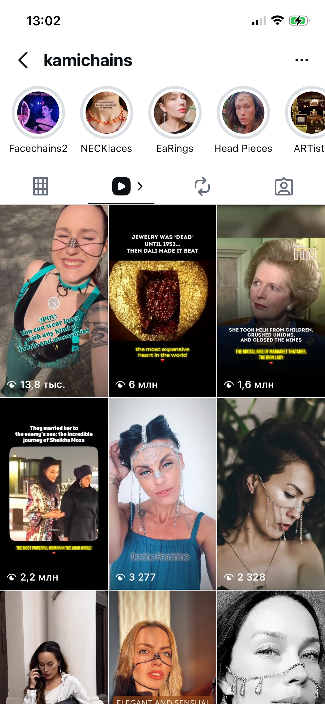
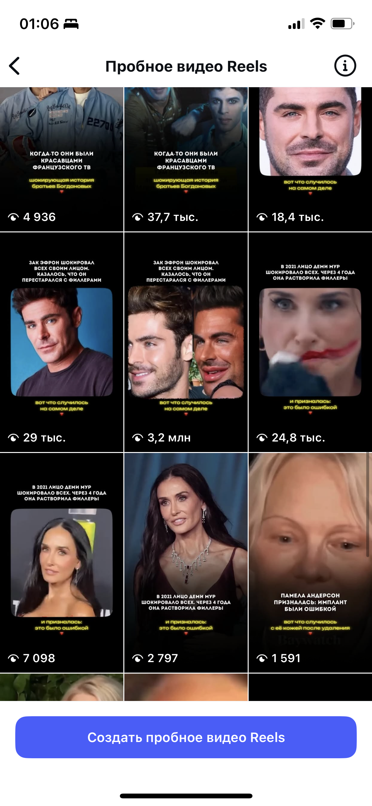
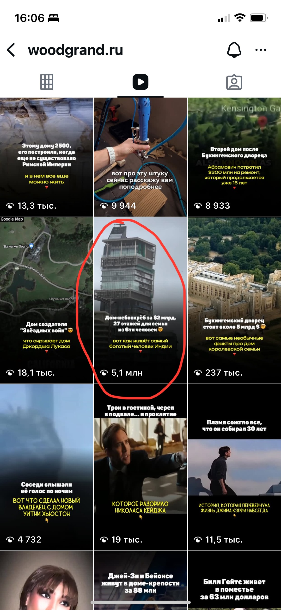
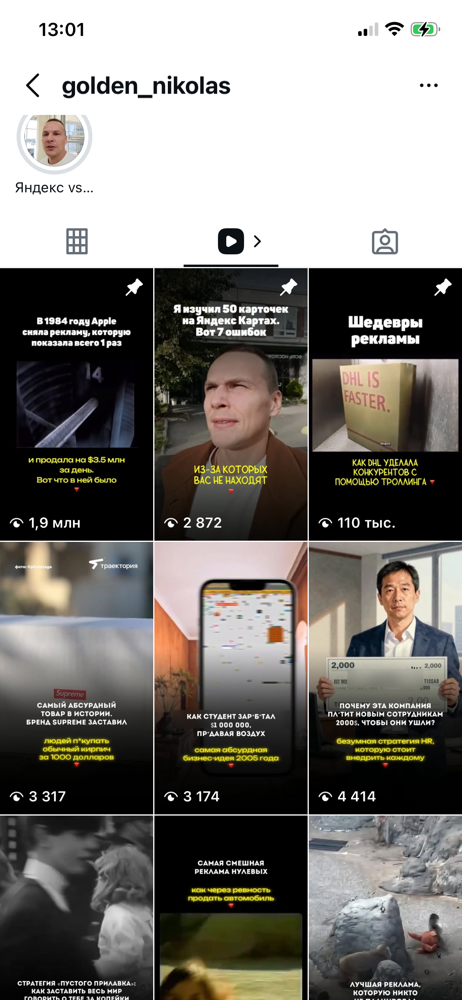

Как запустить ИИ-блогера,
который приводит подписчиков и заявки
На прямом эфире покажу, как создать виртуального персонажа с постоянным лицом и настроить регулярный выход роликов — понятно даже тем, кто открывает нейросети впервые.
Что разберем на мастер-классе
Какие ниши набирают просмотры
На реальных примерах разберем, почему одни ролики видят сотни человек, а другие выходят на десятки тысяч охватов.
Постоянное лицо в каждом видео
Покажем принцип генерации, благодаря которому лицо персонажа не меняется от кадра к кадру, а зрители его запоминают.
Готовое видео за 20 минут
Пройдем весь путь от идеи короткого сценария до реалистичной озвучки и живой мимики персонажа на экране.
Как блог начинает окупаться
Разберем простые способы монетизации через полезные файлы, услуги или рекламу и прием оплат сразу на карту.
Кейсы, которые разберем на эфире
Проект «Рецепты бабушки Марии»
Собрал один 30-секундный ролик о приготовлении драников за счет точного сценария.
Прямой входящий платеж за электронный сборник рецептов в процессе просмотра ролика.
От создания персонажа до стабильных оплат на карту без съемок на камеру.
Проект «ИИ-эксперт: Астрология»
Ролик про самый везучий знак зодиака в 2027 году. Среднее время просмотра — 15 секунд.
Пришло целевых подписчиков с одного короткого видео без вложений в рекламу.
501 репост, 311 сохранений и 2 100 лайков — зрители доверяют персонажу.
Обо мне и опыте в других нишах
Меня зовут Анна. Я продюсер коротких видео и создатель ИИ-персонажей. Занимаюсь тем, что вывожу бренды и экспертов на миллионные охваты в Reels через точный сценарий и удержание внимания с первых секунд.
Все механики, которые приносили миллионы просмотров живым проектам, я перенесла на виртуальных блогеров — и на мастер-классе покажу, как эта система работает шаг за шагом.

Kami Chains
Украшения · ЕвропаВыход на международную аудиторию на английском языке. Ролики набрали до 4,6 млн просмотров, месячный охват вырос в 430 раз, аккаунт вырос с 8 352 до 10 040 подписчиков.

Onmacabim
КосметикаТри ролика-миллионника (3,3 млн, 3 млн и 1,3 млн), +1 000 новых подписчиков. Охват аккаунта вырос с 29 тысяч до 3,8 млн просмотров за месяц.

Woodgrand
Террасная доскаОживили сложную производственную нишу через рубрику о мировой архитектуре. Аккаунт вырос с 7 895 до 9 185 подписчиков на чистой органике.

Golden Nikolas
B2B · Продвижение на картахПривлекли предпринимателей на узкопрофильный микроблог через истории о ярких рекламных кампаниях. Аудитория выросла в 2,3 раза (с 389 до 830 человек).
Приходите на прямой эфир 17 ноября в 18:00
Напишите в личные сообщения ВКонтакте — пришлю ссылку на трансляцию и напоминание перед началом.
Записаться на мастер-класс